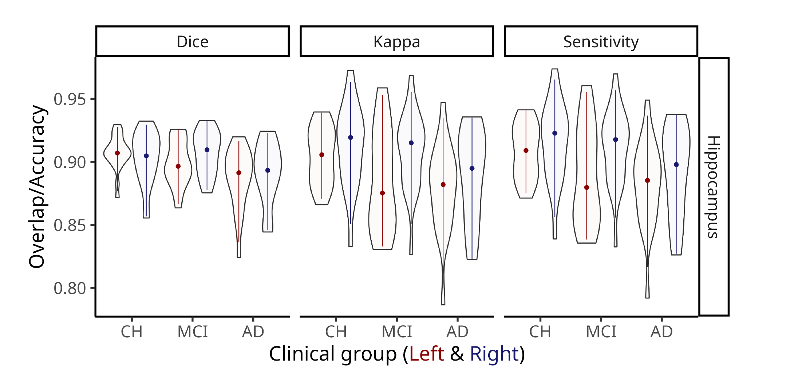

Thesis Seminar
Supplementary material
Chapter 1
Qrater:
a collaborative and centralized imaging quality control web-based application
Imaging data
Demographics: Raw QC (training)
Raw QC: Agreement
Demographics: ADNI
Demographics: Lin. Reg. QC (training)
Lin. Reg. QC: Agreement
Demographics: Skull segmentation QC
Chapter 2
Enhanced Detection of Age-Related and Cognitive Decline Using Automated HVR in AD patients
Validation: Performance
